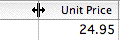
It is easy to customise the lists so that they present information in the way that best suits your needs. You can move the columns around, resize then, and even add additional columns of your own.
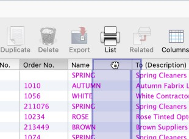
To add and remove columns:
The List View Options window will be displayed.
The columns in any of the list views can be resized by positioning the cursor between the column headings and dragging left or right.
Resize a column by dragging left or right between the column headings.
You can rearrange the order of the columns by dragging the column heading to the left or right, until the cursor is near the gap between two other columns (you will see a blue insertion indicator between the columns where the column will be moved).
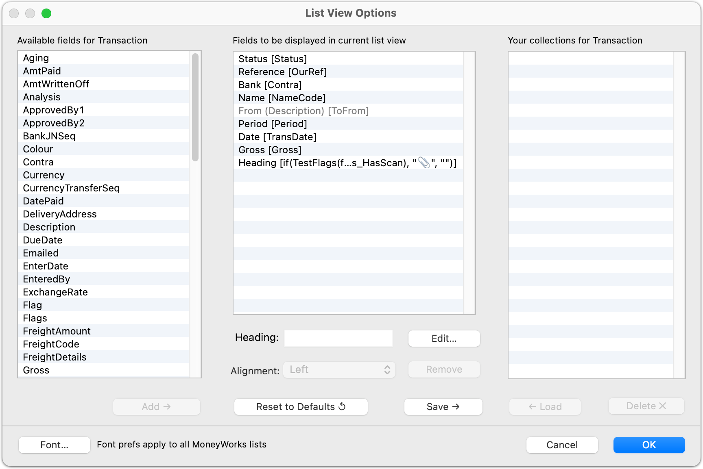
The list on the left contains all the eligible columns which can be displayed, and that in the middle contains the columns currently displayed in the list.
To insert a column: Select it in the left hand list to be inserted and click Add →.
To remove a column: Select it in the middle list and click Remove. Columns that are greyed out may not be removed.
To re-order the columns: Drag the columns up or down in the right hand list.
To rename a column heading: Click on the column in the right hand list and type the new heading in the text entry field at the bottom of the list.
Custom list collections
If you want to be able to easily apply your customised columns to another list view, or to easily switch between alternative sets of columns for a list view, you can save the current set of columns in the Collections list.
To change the font used in the lists: Click the Font button to open the MoneyWorks font preferences settings, which allows you to set the list screen fonts and the list print fonts —see Fonts. Any changes you made will be reflected in all MoneyWorks lists for any MoneyWorks document on your computer.
To save the current set of columns for instant recall later: Click Save →. You will be asked to type a name for the set of columns. The named set of columns will be added to the Collections list on the right hand side. If the name you give is already used, the existing entry in the collections list will be replaced.
You will be able to select the set of columns from the Columns toolbar menu.
Changes will be applied when you click OK.
To replace the columns in the middle list with a set from the collection list:
Select the named set of columns in the Collections list and click ← Load.
This has the same result as selecting the set of columns from the Columns toolbar menu, without visiting the Customise List View window.
Changes will be applied when you click OK.
To delete a column set from the collection list: Select the named set of columns in the Collections list and click Delete.
Changes will be applied when you click OK.
Tip: To show the records in a file in the order in which they were created, sort your list by SequenceNumber.
As well as showing stored field values, lists can be set to show values that are calculated on the fly. Discretion should be used with this feature, as results that depend on excessive calculation (such as the summing records in another file) may seriously impact performance.
To insert a calculated column
This will always be at the bottom of the left hand list
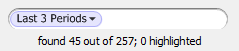
Every list has associated with it a List Filter. This enables you to quickly filter the records displayed in the list based on some
Click the Edit button
The Calculation window will be displayed
Click OK
If your expression is incorrectly formed (i.e. MoneyWorks can’t understand it), you will get an error message, and you will need to correct the expression—see Calculations and things
If your calculation returns a numeric result, set the alignment to Decimal. This will ensure it is totalled whenever the list is printed.
predefined search criterion. The filter is located in the left of the search box (on the right of the toolbar), as shown below.
The list filters are in the left of the search box
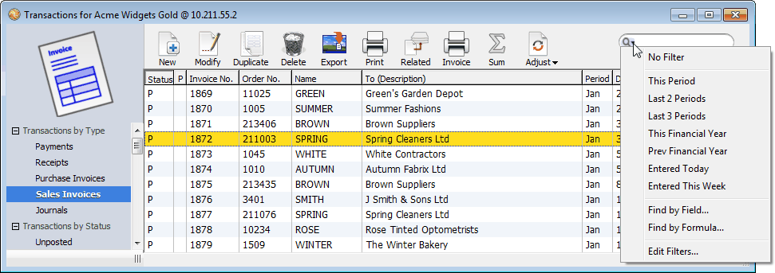
You can add an optional format expression which alters how the information in the list is displayed, but not how it will be sorted. The format expression is separated from the calculation by a semicolon, and can access the calculated result by the use of a special _result variable.For example a column in the Transaction list with a calculation of:
To invoke a filter, simply select it from the filter menu. The records in the list will be filtered according to the selected criterion. The filter will remain in effect until changed; note however that if that list is the target of a Find Related search, the filter will be reset to No Filter.
Note: If you do a Find on a filtered list, the records found will be filtered. Thus if you have your filter set to “Last 2
will display the number of the day of the week of the transaction (1 for Monday, 2 for Tuesday and so forth). However:
DayOfWeek(transDate)
Periods”, and you then find every transaction over $1,000, you will in fact be finding every transaction over $1,000 in the last 2 periods.
The selected filter is shown in the search box.
will display the day name, but the column will sort numerically by day number.
DayOfWeek(TransDate);Choose(_value, "Mon", "Tues", "Wed",
"Thurs", "Fri", "Sat", "Sun")
On Datacentre you can copy all settings (including custom columns, filters, validations, and other settings) from one user to another. See Copying Settings between users.
If you press the backslash key “\”, the filter menu will be briefly enabled. You can then (quickly) type a few letters of the filter name, and the first filter found that contains a word starting with those letters will be invoked. For example, using the pre-supplied filters in the Transaction List:
invokes This Period
\thi
invokes Last 3 Periods invokes Entered Today
\3
\Ent
Using the Edit function in the filter menu, you can create your own filters. This allows you to store and easily invoke commonly used searches.
To create your own filter for the currently displayed list:
Choose Edit... from the Filter menu
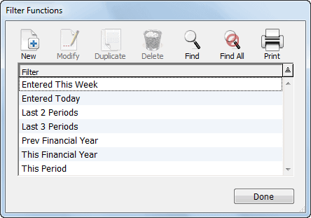
The Filter Functions window will open, displaying all filters for the list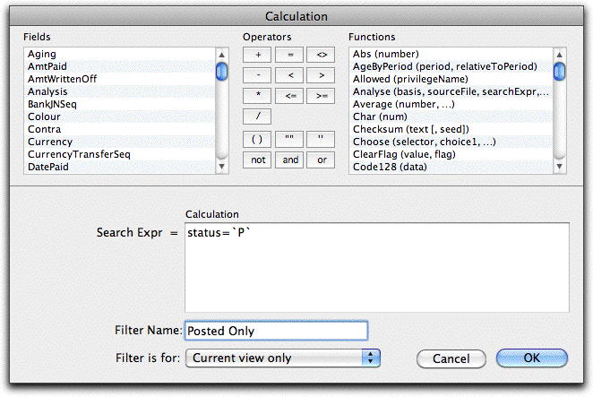
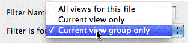
Clearly a complicated or badly formed search will take longer to perform than a simple indexed search, and this could have severe performance implications when your list is redrawn). It is for this reason that you should use discretion with complex or relational searches.
Set the Filter is for pop-up menu (if present)
This is only present for tabbed list windows (such as Names, Transactions). You can make the filter available for just the current tab view, all tab views, or (for the transaction list window) all tab views in all tab sets (View by Status, Type etc).
For tabbed list windows, a filter can be applied to just one view or all the tab views.
The Calculation window will be displayed
If your search expression is incorrectly formed (i.e. MoneyWorks can’t understand it), you will get an error message when you click OK. You need to correct the expression before you can click OK successfully.
The newly created Filter will appear in the Filter menu, and can be activated by selecting it. Once selected, it will remain in operation until changed11 (even if you quit out of MoneyWorks).
Filters can be modified and deleted in the normal manner by
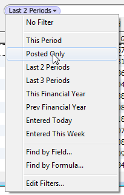
The installed filter
8 The exception is the Transaction list, whose Gross column is automatically split into Net, Tax and Gross.↩︎
9 MoneyWorks Cashbook will not show you the import settings unless you hold down the option key (Mac) or the shift key (Windows) and choose Paste Records from the Edit menu.↩︎
10 Payments/receipts against invoices can be easily identified in the Transaction list as their Bank account is shown in italics. To copy (paste) these hold down the option key (Mac) or the shift key (Windows) and choose Copy (Paste) Records from the Edit menu↩︎
opening the Filter Function window (using Edit in the Filter menu) and double clicking or using the toolbar buttons.
Tip: On Datacentre you can copy all settings (including custom columns, filters, validations) from one user to another. See MoneyWorks Privileges.
1 In MoneyWorks 5 and earlier, these views were displayed as tabs across the top of the list.↩︎
2 The purist might argue that it makes more sense to use the up and down arrows to navigate through the views. These in fact are used to navigate up and down the records in the list.↩︎
3 The options that, in MoneyWorks 6 and earlier, were available in the Print list dialog are now accessed through these sidebar reports.↩︎
4 The filter menu was on the left of the list in versions previous to MoneyWorks 7↩︎
5 The records that it searches are all those determined by the current tab view and filter (i.e. a Find All for the view and filter is done first). ↩︎
6 In MoneyWorks 6 and earlier, these shortcuts would open the Find by Field search window.↩︎
7 If you omit the relational operator, expressions that evaluate to non-zero will be shown in the list after the search is complete.↩︎
11 or the list is the target in a Find Related.↩︎
On Datacentre you can copy all settings (including filters, custom columns, validations, and other settings) from one user to another. See Copying Settings between users.
As part of the your operations, you will need to prepare reports and print forms (such as invoices). In MoneyWorks you have the option of printing or emailing these, making PDF or text files, or even transferring the information into Word, Excel or Numbers. These are all done in the in the same, consistent manner.
There are three basic types of printout from MoneyWorks:
Reports: To print a report, choose the report from the Reports menu. The Report Settings dialog box is displayed.
For Datacentre users, a double- arrow is displayed above the Output pop-up menu if the report is going to be prepared on the server instead of the client.
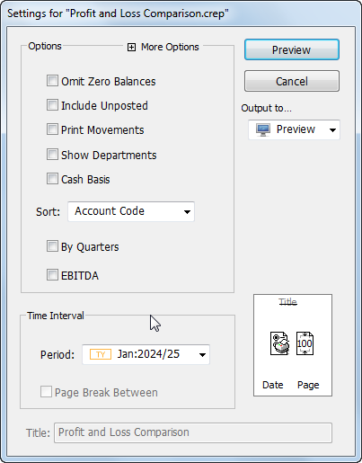
Lists: To print as it is on screen, highlight the records to print (unless you want to print all records), and choose Print from the File menu (or press Ctrl-P/⌘-P, or click the Print List toolbar button). The Print List dialog opens:
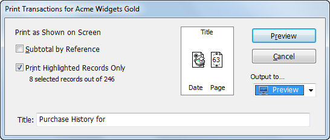
In the transaction list only, clicking the Print Details toolbar button will print the transactions showing their detail lines. This will enable you to see how a transaction was coded, either in terms of its items, or the general ledger debits and credits that underpin the transaction (i.e. the underlying accounting journal).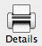
The Print Details
icon
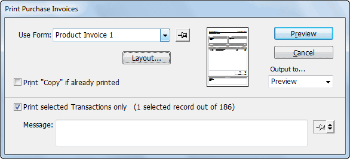
These settings windows all have common icons and buttons which you use to determine the page size, output medium and so forth. There are also specific options that depend on the type of object being printed (for example, what Period to use when printing a report)—these are discussed elsewhere.
To print a report that is based on the list, click on the report in the Reports section in the list sidebar.
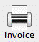
Forms: To print a form (receipt, invoice, product label, job sheet, etc.), highlight the records you want to print in the list, then choose Print «record» from the
Command menu (or press Ctrl-[/⌘-[),
The settings that affect the printer, page size and margins are contained in the page display, except for custom forms where they are set by the Layout button.
Click the Page Setup
icon to access the standard page setup for your printer. Settings here include paper size and
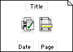
Use the page settings to specify paper size, orientation andor click the Print Form toolbar button. The Print Form dialog box is displayed.
To print a list, click
the left hand Print List toolbar button.
To print a form
(invoice) use the right hand Print List
orientation, and (for Macintosh) scaling.
margins
Forms are discussed in more detail in Printing Forms.
button.
Click the Page Margins icon to specify the margins for the printout. On Windows the scaling factor is also specified here —see Changing the Margins and Leading.
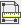
Note: If the Auto-Scale option is set, MoneyWorks reports will automatically scale down to fit the selected paper width and orientation.
The title, date printed and page number will automatically be printed on each page of the printout (unless you are printing a form). To suppress one or all of these click on the Title, Date or Page icon—a line will be drawn through the item to signify that it will not appear on the printout. Clicking on the item again will
The icon will display the next set of pyjama stripes
Ultimately the page will again be blank, indicating no stripes.
the Page display to change the stripes
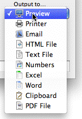
restore it to the printout.
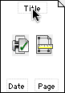
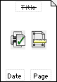
Click on the Title (or Date or Page) so it won’t appear on the printout
Unless the title of the printout is suppressed, the title will appear at the top of each page, and will default to the name of the list or report that you are printing. To change the title:
Printouts can be directed to a variety of destinations, including the printer, disk files, preview, email, Word, Excel and the clipboard. This is achieved by setting the Output to pop-up menu.
You can preview a printout on your screen by choosing the Preview option. Having viewed the printout, you can then elect to print it.
To preview a printout on the screen:
Set the Output to pop-up menu to Preview
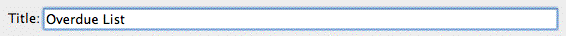
Click the Preview button or press enterUse the Output to menu to specify where you want your report directed.
The Title field will be disabled if title printing is suppressed.
You can add “Pyjama stripes” (a series of background stripes) as a background to reports (and Plain forms) to make them easier to read. To add or change pyjama stripes:
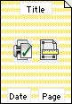
Ctrl/Option Click in
The printout will be generated and displayed in the Preview window, allowing you to inspect it before printing or emailing it.
To print directly to the printer:
Set the Output to pop-up menu to Printer
Click Print...
The standard print dialog boxes will be displayed, allowing you to select the page range, number of copies, paper source etc.
Any printout can be emailed. MoneyWorks will prepare the email and add the printout as a PDF attachment. Unless you are using the built-in SMTP server
—see Emailing, MoneyWorks will not send the email, but make it ready for your email program.
To send a printout as an email:
Set the Output to pop-up menu to eMail
Click the Send... button or press enter
The Mail Attachment window will open

This defaults to the title of the printout.
You can type these in, or insert them from the list of Names
You cannot do this if you are using a mail client (but you can enter it using your email client before sending).
Choose the Contact or Role from the popup menu
The contacts and email address for that role will be displayed. Where a name has multiple contacts with the same role, all those contacts will be emailed (one email, with multiple addresses in the Send To field).
The addresses in the Send To field should be separated by commas. People’s real names, if present, should be enclosed in double quotes and precede their email addresses.
Click the Send button
A single email will be created addressed to the nominated recipient(s), with the printout as an attachment. The email is not sent, but it will appear in your email program for sending.
emailing Invoices, Orders and Statements: When you email an invoice or statement, you normally are going to send it to the client. MoneyWorks knows of course the details of the client, including the email address (providing you have recorded it). The Separate Emails tab in the Mail Attachment window allows you to send the emails direct to the intended recipient—see Emailing Forms.
emailing as pdf: Custom forms (invoices, statements etc) can be emailed as pdf attachments. This preserves the layout and graphics on the form.
Most printouts (except custom forms, which are graphical) can be output to disk, either as tab-delimited text or html.
To export a printout:
The default button will read Save As...
Click the Save As... button or press enter
The standard Create File dialog box will be displayed.
Click Save
The file will be written to disk in the specified format.
Most printouts (except custom forms, which are graphical) can be sent directly to Microsoft Excel or Word, or on Mac, to Numbers.
Click the To Excel (or To Word) button
The output will appear in Excel or Word—if the application is not running, it will be launched. Clearly you must own Excel or Word for this to work.
Textual output (such as reports and plain forms) can be sent straight to the clipboard, allowing you to paste the information into another application.
Set the Output to pop-up menu to Clipboard
The default button will read Copy
The information will be placed on the clipboard.
Most printouts (including graphical ones) can be made into a PDF file.
Click the Save As button
You will be prompted for the name and location for your pdf file.